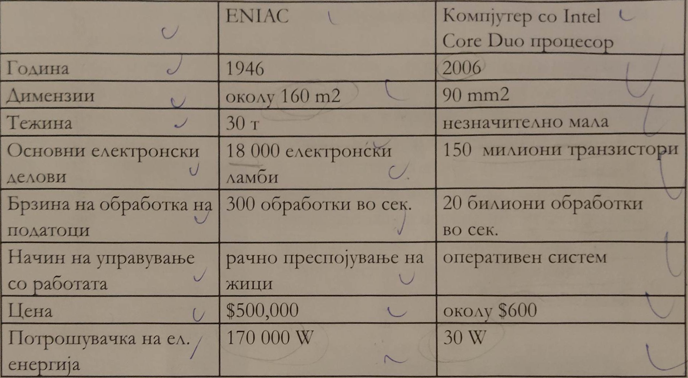

Абакусод
бил првиот уред за рачно сметање, пред тоа луѓето сметале со прсти.
Првиот механички уред за сметање се викал Паскалина и бил направен од Блејз Паскал.
Потоа бил направен првиот електромеханички уред кој се викал Машина за табелирање на потпис на население или Census tabulating Machine ENIAC 1 бил направен во 1946 год. и бил првиот Електронски компјутер. Неговта градба се состоела од електронски ламби.

Првиот успешен модел од персонален компјутер бил Ејпл 1, а Ејпл 2 бил првиот персонален компјутер